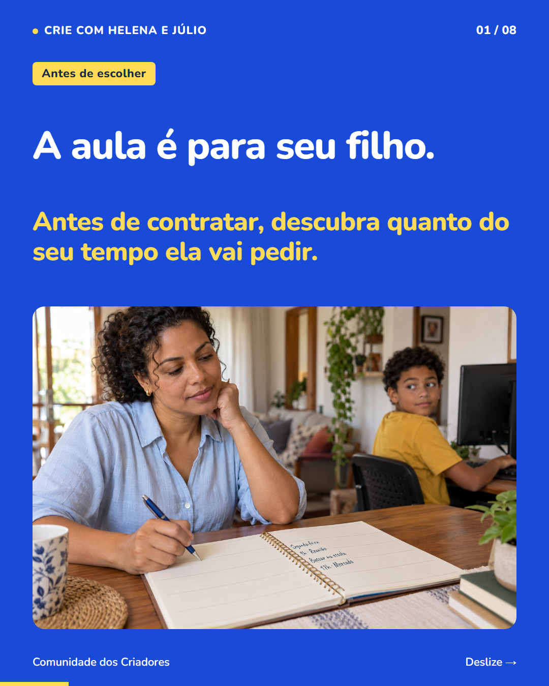
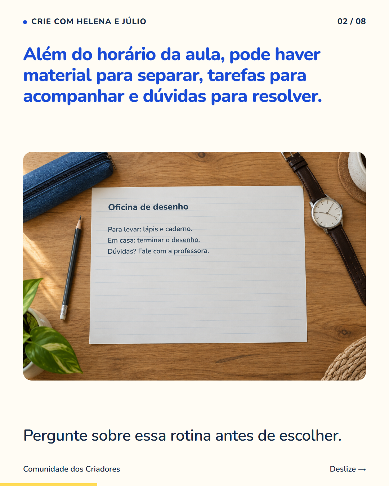
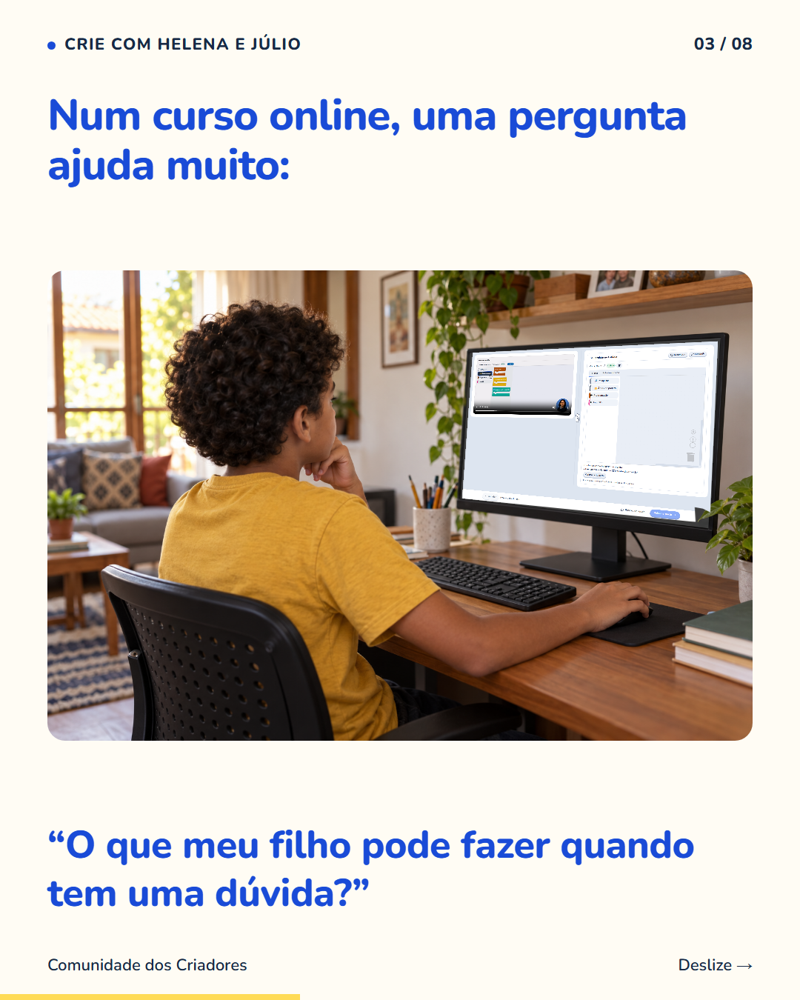
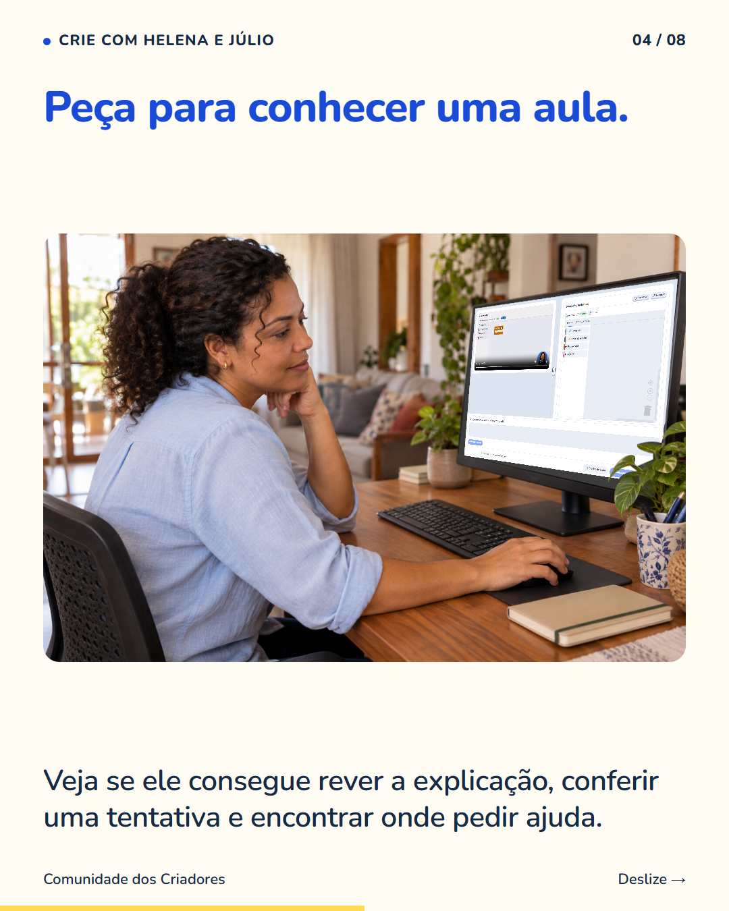
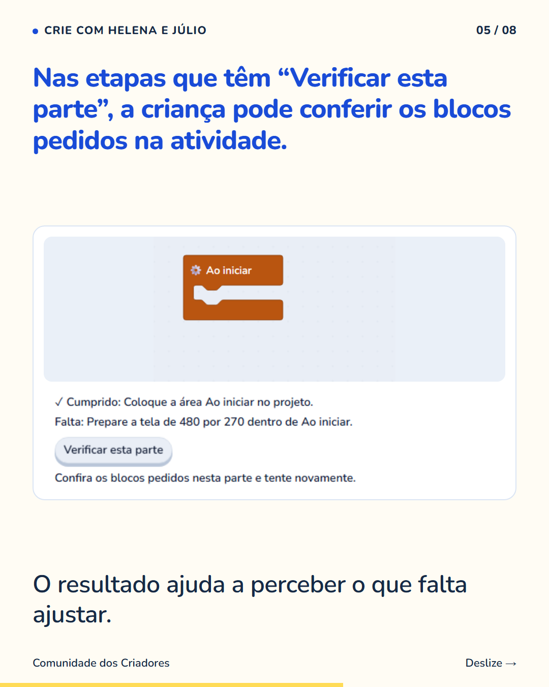
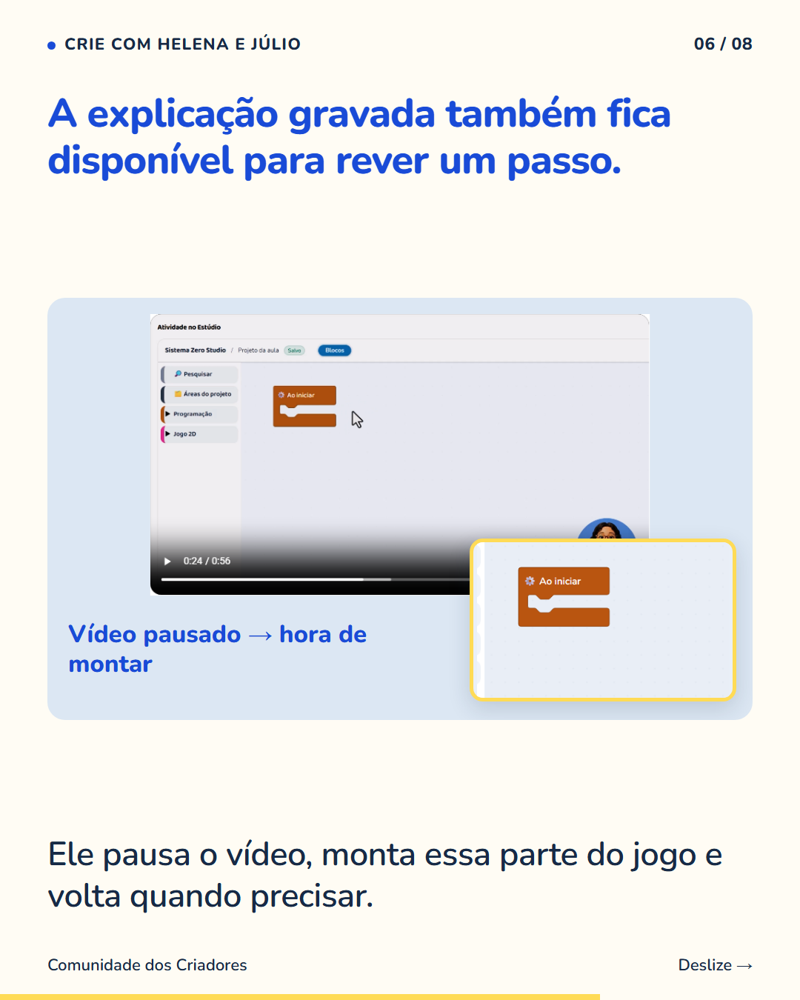
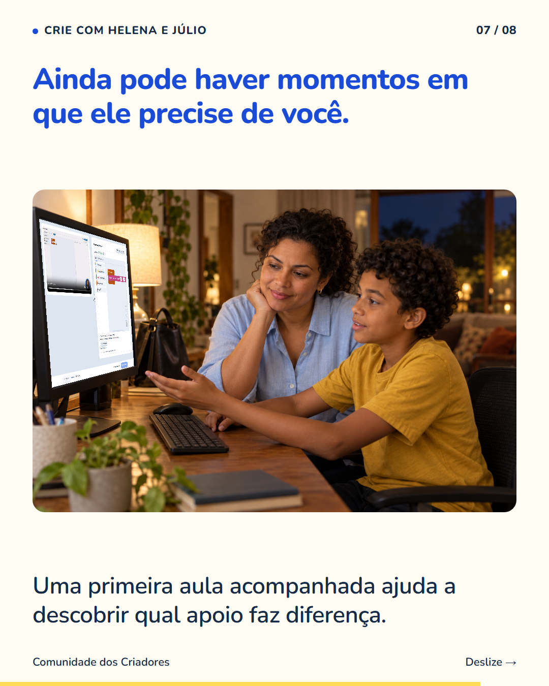
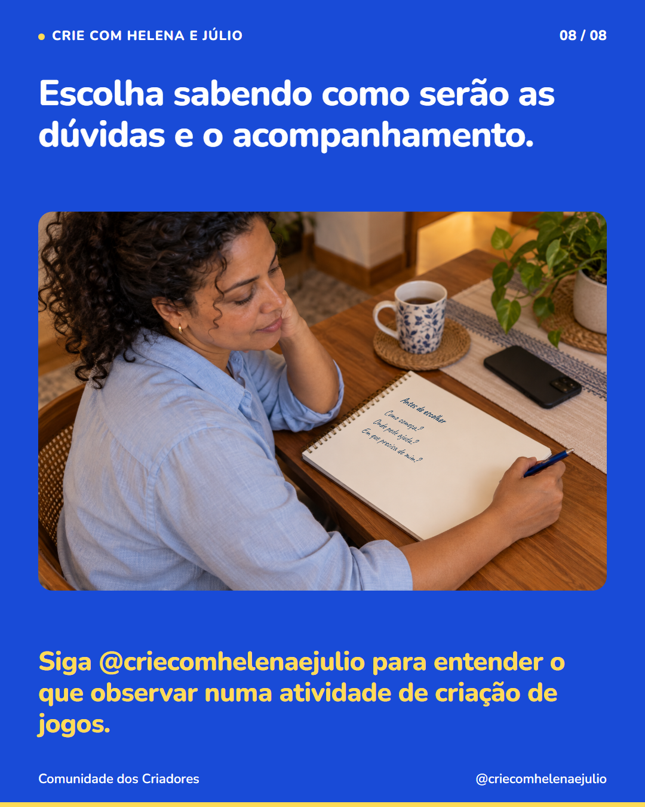

8 slides · 1080 × 1350 · Copy revisada · Dúvidas, apoio e rotina da família








Uma aula que cabe no horário pode exigir um acompanhamento que não cabe na rotina. Antes de escolher uma atividade, pergunte como a criança começa, o que precisa ter à mão e a quem pode recorrer numa dificuldade. Se o curso for online, peça para conhecer uma aula e os recursos de ajuda. Nas nossas atividades, a criança cria uma parte do jogo e testa. Pode rever a explicação gravada e, nas etapas que oferecem a opção, usar “Verificar esta parte” para conferir os blocos pedidos. Se a dúvida continuar, pode enviar uma mensagem. Isso não define de antemão quanto apoio seu filho vai precisar. Acompanhar o começo ajuda vocês a perceberem como a atividade se encaixa na casa. Siga @criecomhelenaejulio para entender o que observar numa atividade de criação de jogos.